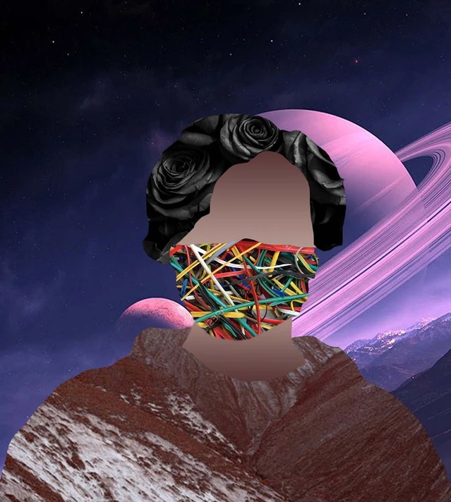

Ruiz-Serrano

My name is Alejandro Ruiz-Serrano and I am an aspiring
web-developer/programmer with various other skills built up
throughout the years. The graphic below is an example of some of my non web or programming related work,
a photo of myself overlaid with various different images. Also included below is a photo of me without the overlays.

My skills include:
HTML, CSS, and java for websites(Such as this website)
Programming with python
Creating databases with proper relations and normal forms
Using the linux terminal's commands and creating bash scripts
I hope to be able to find an internship so I can continue to study in college to acquire more skills while also finding real practical applications for everything I've learned. In the meantime I enjoy using these skills in personal projects such as learning to create games or helping friends with researching their own projects.